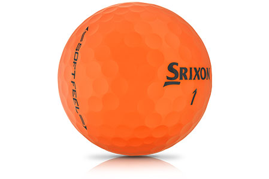

A masterpiece in colour
Whether off the tee or around the greens, the new SOFT FEEL BRITE lives up to its namesake. With it, you’ll experience a solid yet comfortable impact on every swing, giving you more confidence as you address each shot.
TECHNOLOGY
Fastlayer core
With a soft center that gradually transitions to a firm outer edge, the FastLayer Core gives SOFT FEEL BRITE incredible softness and great distance off the tee.
338 SPEED DIMPLE PATTERN
To get more distance overall and better performance in the wind, Speed Dimples reduce drag at launch and increase lift during descent.
MATTE VISUAL PERFORMANCE
Three Brite color options - Red, Orange, and Green - enhance visibility so it's easy to find your ball.
SOFT, THIN COVER
Provides more greenside spin and softer feel on all pitches, chips and putts.
Soft Feel Specs
| CONSTRUCTION | 2pc |
| COVER MATERIAL | Ionomer |
| COMPRESSION | 60 |
| DIMPLE NUMBER | 338 |
AVAILABLE COLORS
Brite Green, Brite Orange, Brite Red
SRIXON SOFT FEEL BRITE PRICE
25 € / 28 CHF / 250 SEK / 24 £